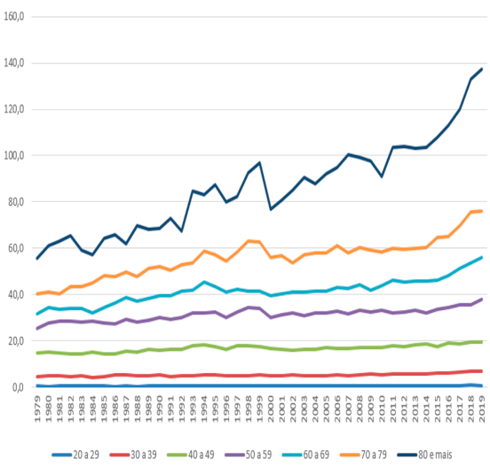

O Câncer em números
Incidência estimada conforme a localização primária do tumor
-Em mulheres, Brasil, 2020
| Localização Primária | Casos novos | % |
|---|---|---|
| Mama feminina | 66.280 | 29,7 |
| Cólon e Reto | 20.470 | 9,2 |
| Colo do útero | 16.710 | 7,5 |
| Traqueia, Brônquio e Pulmão | 12.440 | 5,6 |
| Glândula Tireoide | 11.950 | 5,4 |
| Estômago | 7.870 | 3,5 |
| Ovário | 6.650 | 3,0 |
| Corpo do útero | 6.540 | 2,9 |
| Linfoma não-Hodgkin | 5.450 | 2,4 |
| Sistema Nervoso Central | 5.230 | 2,3 |
| Todas as Neoplasias, exceto pele não melanoma | 223.110 | 100,0 |
| Todas as Neoplasias | 316.280 |
- MS / INCA / Estimativa de Câncer no Brasil, 2020
- MS / INCA / Coordenação de Prevenção e Vigilância / Divisão de Vigilância e Análise de Situação
O câncer de mama afeta a vida de milhares de pessoas ao redor do mundo. Para ter um panorama de seu impacto é preciso recorrer aos estudos que procuram mensurar a abrangência dessa doença.
Abaixo, realizamos uma seleção com dados recentes sobre câncer de mama, confira!
O câncer de mama no mundo
Segundo a última pesquisa realizada pela Agência Internacional de Pesquisa em Câncer (IARC) sobre a incidência do câncer no mundo, o câncer de mama é um dos três tipos de maior incidência, junto com o de pulmão e o colorretal, e é o que mais acomete as mulheres em 154 países dos 185 analisados.
Em 2018, eram esperados aproximadamente 2,1 milhões de novos diagnósticos de câncer de mama, contribuindo com cerca de 11,6% do total de casos de câncer no mundo.
Este tipo de câncer, segundo a instituição, é o quinto em questão de mortalidade no mundo, sendo estimadas mais de 627 mil mortes em 2018 - o que representa 6,6% do total de mortes por todos os tipos da doença. A pesquisa também aponta que uma a cada quatro mulheres que têm um caso de câncer diagnosticado têm câncer de mama, representando 24,2% do total.
O câncer de mama no Brasil
O câncer de mama é a primeira causa de morte por câncer na população feminina em todas as regiões do Brasil, exceto na região Norte, onde o câncer do colo do útero ocupa essa posição. A taxa de mortalidade por câncer de mama, ajustada pela população mundial, foi 14,23 óbitos/100.000 mulheres, em 2019, com as maiores taxas nas regiões Sudeste e Sul, com 16,14 e 15,08 óbitos/100.000 mulheres, respectivamente (INCA, 2021).
Na mortalidade proporcional por câncer em mulheres, em 2019, os óbitos por câncer de mama ocupam o primeiro lugar no país, representando 16,1% do total. Esse padrão é semelhante para as regiões brasileiras, com exceção da região Norte, onde os óbitos por câncer de mama ocupam o segundo lugar, com 13,2%. Os maiores percentuais na mortalidade proporcional por câncer de mama foram os do Sudeste (16,9%) e Centro-Oeste (16,5%), seguidos pelo Nordeste (15,6%) e Sul (15,4%) (INCA, 2021).
A incidência da doença aumenta em mulheres a partir dos 40 anos. Abaixo dessa faixa etária, a ocorrência da doença é menor, bem como sua mortalidade, tendo ocorrido menos de 10 óbitos a cada 100 mil mulheres. Já a partir dos 60 anos o risco é 10 vezes maior.
Abaixo, temos uma representação espacial das taxas de mortalidade por neoplasia maligna da mama por 100 mil mulheres, para o ano de 2019, segundo unidade da Federação.

Taxas de mortalidade por câncer de mama, específicas por faixas etárias, por 100.000 mulheres. Brasil, 1979 a 2019

A importância da redução de risco e do diagnóstico precoce do câncer de mama
A redução de risco e o diagnóstico precoce da doença seguem sendo os principais fatores para reduzir a mortalidade por câncer. Segundo o INCA, é possível reduzir em 28% o risco de uma mulher desenvolver câncer de mama a partir da adoção de alguns hábitos.
Entre eles estão:
-
 Praticar atividade física regularmente;
Praticar atividade física regularmente;
- Alimentar-se de forma saudável;
- Não fumar;
- Ter o peso corporal adequado;
- Não ingerir bebidas alcoólicas;
- Evitar uso de hormônios sintéticos em altas doses.
Já o diagnóstico precoce possibilita que as chances de cura sejam muito maiores para a paciente, chegando a 95%. Infelizmente, quanto mais avançado for o estágio do câncer de mama no momento em que a doença é detectada, ou seja, quanto mais tarde a doença for diagnosticada e tratada, essa chance de cura vai ficando menor.
Por isso, é preciso que as mulheres conheçam seu corpo e suas mamas, estejam atentas a qualquer alteração que possa indicar uma anormalidade e procurem um médico imediatamente caso identifiquem alguma suspeita Além disso, deve-se realizar os exames de mamografia periodicamente. O INCA afirma que a mortalidade da doença diminui em cerca de 20% nas mulheres entre 50 e 69 anos que realizam o exame a cada dois anos.
A FEMAMA e a Sociedade Brasileira de Mastologia (SBM) recomendam a realização anual da mamografia regular a partir dos 40 anos em mulheres assintomáticas, como define a Lei 11.664/2008. No SUS, porém, por determinação do Ministério da Saúde, a orientação é para que a mamografia seja realizada em mulheres com idade entre 50 e 69 anos a cada dois anos.